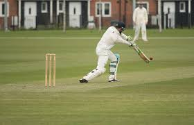

United Kingdom
Sports
Home | Gastronomy | Sports | Economy | Places

soccer

criquet
how to play it?
Soccer is a fun game where two teams try to kick a ball into the other team’s big net to score a goal. You use your feet to move and kick the ball, not your hands, and you can pass the ball to your teammates to help each other. Everyone runs a lot, tries their best, and plays nicely by not pushing or tripping. The most important thing is to have fun and enjoy playing together!
how to play it?
Cricket is a game where two teams take turns playing, and one team tries to hit a ball with a bat and run to score points. One player hits the ball, then runs back and forth with a teammate while the other team tries to catch the ball or knock over the sticks behind them. If the ball is caught or the sticks fall, the hitter is out. Everyone takes turns, cheers for their friends, and has fun playing together!
what do I need?
to play soccer, you don’t need much! You need a ball, comfortable clothes, and shoes (sneakers are fine, soccer shoes are even better). It’s good to wear shin guards to protect your legs, and you need a safe place to play, like a field or park. Most of all, you need friends or teammates and a good attitude to have fun
what do I need?
To play cricket, you need a few simple things: a cricket bat, a ball, and three sticks called wickets. It helps to have comfortable clothes and shoes, and sometimes players wear pads, gloves, or a helmet to stay safe. You also need friends to play with, some space to run, and a happy mood to have fun!